Open source · API-first
Control building-block RC toys through one clean API.
It drives Bluetooth-LE machines over a documented WebSocket contract. Mould King comes first.
There's one smart web client, and a radio core you can swap out underneath it: a Raspberry Pi, the Android app in your pocket, or a tiny ESP32 board. All three drive real toys today.
Why it's different
Thin transport, smart client.
Most RC apps bake the toy into the app. moldqueen keeps them apart: one documented contract sits in the middle, and either side can change on its own.
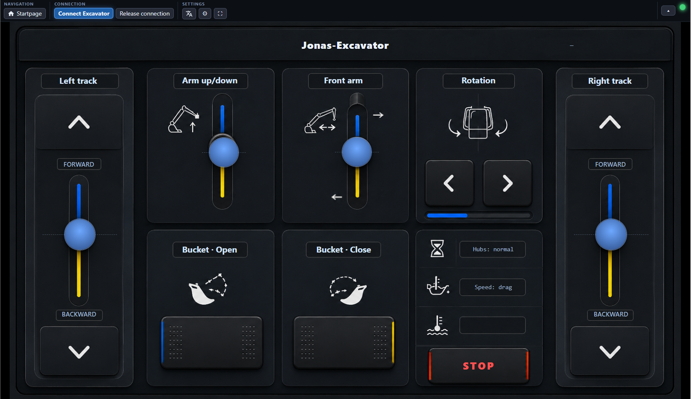
The contract is the product.
There's one documented WebSocket contract. The radio core only carries low-level channel writes. Everything else lives in the client: which function maps to which channel, inversion, travel limits, and a keepalive that stops the machine if the page goes quiet. Anything that speaks the contract can drive it, whether that's a browser, a script, or an agent.
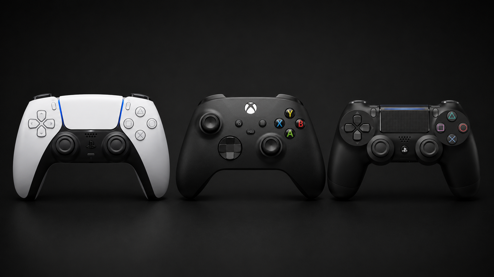
Drive it with a controller.
Pair a DualSense (or any controller) over Bluetooth and drive, on the excavator and on the generic layouts. It works in the browser and in the Android app, and touch keeps working too. The bindings are editable, the defaults are sensible, and the gamepad runs through the same safety logic as touch, right down to STOP.
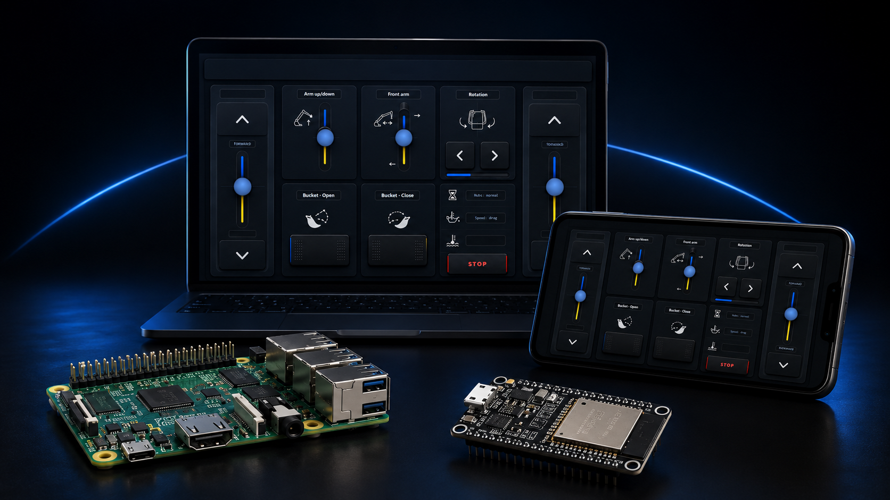
Put the radio where you like.
The radio is only one end of the contract, so it can live wherever suits you: a Raspberry Pi over raw Bluetooth, the standalone Android app with no Pi at all, a tiny ESP32 board over WiFi, or the client served from your desktop or a Docker container against a remote core. The interface stays the same in every case.
Layouts
One client, many machines.
Open moldqueen and you land on the chooser, with every layout as a card. Pick one and drive. Model layouts are tuned to a specific machine; generic ones drive any twelve-motor toy.
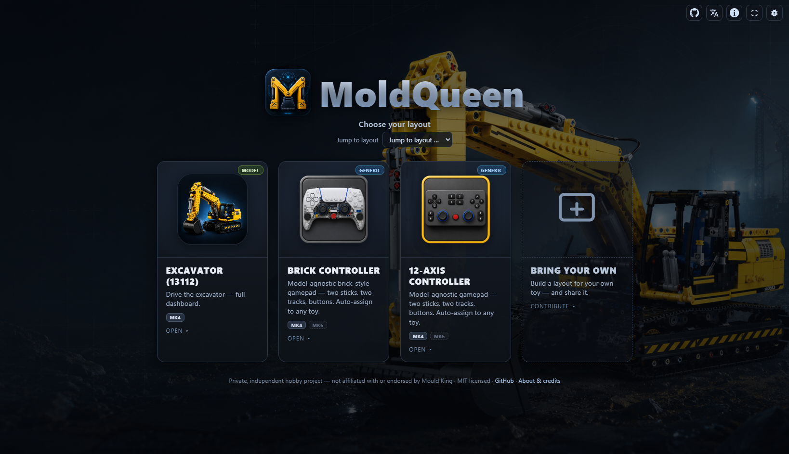
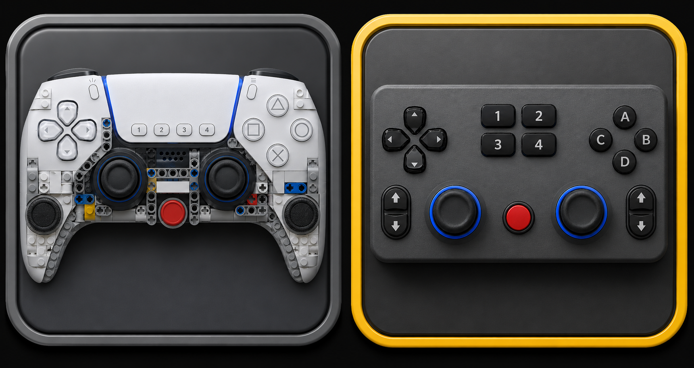
One controller, any twelve-motor toy.
No dashboard for your exact model? The generic layouts (a brick-built gamepad and a 12-axis grid) map themselves to your machine with a guided auto-assign. You move a stick, watch which motor reacts, and that's the binding. After that, drive by touch or gamepad.
Cards are pulled live from the project manifest. The badges match the app: Generic or Model, plus the supported protocol. MK4 works today; a greyed-out MK6 is on the roadmap. Hover a card to expand it.
Get the Android app
Pick your radio.
Three radio cores, one web UI. They all speak the same contract; the only difference is where the radio sits: your phone, a Raspberry Pi, or a tiny ESP32 board.
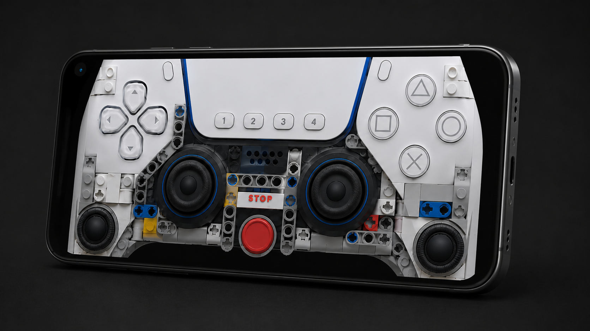
Everything on the phone.
A self-contained app. It uses the phone's own Bluetooth radio, serves the interface on the device, and needs neither a Pi nor a network.
Latest signed release: v0.1.2. Download moldqueen-v0.1.2.apk, allow install from unknown sources, then open it. F-Droid: MR !41291 under review.
Or build it yourself over USB:
# repo cloned, device connected
cd android-core
./gradlew installDebug
All builds and release notes are on GitHub Releases.
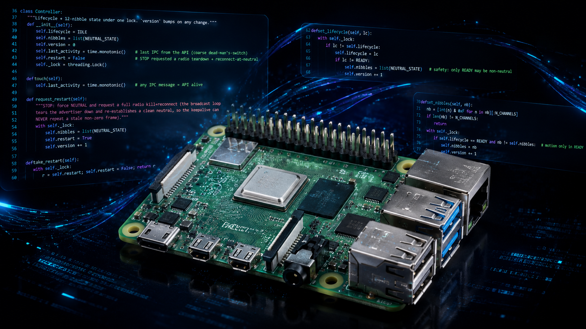
The reference radio.
Run the full radio core on a Pi with a Bluetooth-LE USB dongle, then open the UI from any browser on your network:
git clone https://github.com/jrichter24/moldqueen
cd moldqueen
scripts/start.sh
# then open http://<pi>:8080/
The full setup, from unboxing to the first drive, is in the Quickstart.
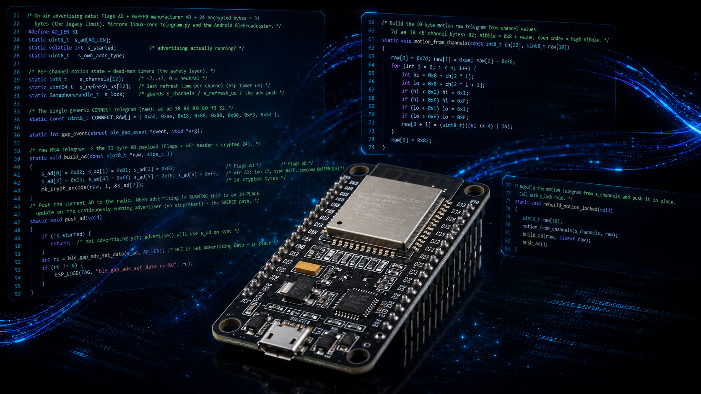
The smallest radio.
A third radio core on a tiny, cheap ESP32-S3 board: a clean-room C port of the codec, the same Bluetooth-LE advertiser, and the same WebSocket API over WiFi. It is a usable standalone appliance. No credentials are baked in: flash it, then a branded setup page asks for your WiFi. After that it joins your network and you reach it by name, no IP to chase. No Pi, no phone, just the board.
# ESP-IDF installed, board connected
cd esp32-core
idf.py flash monitor
First boot opens a setup WiFi (moldqueen-setup) to enter your network; after that the board is discoverable as moldqueenesp.local with a built-in management page at moldqueenesp.local:8080. Walk the setup below, or see the esp32-core folder.
Mix and match
One client, any radio.
There is one smart client and it runs the same everywhere: the Pi-served page, the Android WebView, a Docker container, the desktop dev server, and soon iPhone and Mac. Learn the interface once and pick any server with any client. The table below shows what each build hosts today.
| Build | Server (radio) | Client (UI) |
|---|---|---|
| Android app | ✓ | ✓ |
| Raspberry Pi 1 | ✓ | ✓ |
| ESP32 | ✓ | − |
| Desktop dev client | − | ✓ |
| Docker image | − | ✓ |
| Android (server-only) planned | ✓ | − |
| Android (client-only) planned | − | ✓ |
| iPhone / Mac client planned | − | ✓ |
1 The Pi is a monolith: it can run the full server plus client, or be told to run server-only or client-only.
ESP32 setup
Setting up the ESP32.
Once the firmware is flashed there is nothing to compile in. The board has no WiFi credentials, so it opens its own setup network the first time. These are the five steps from a freshly flashed board to driving over WiFi.
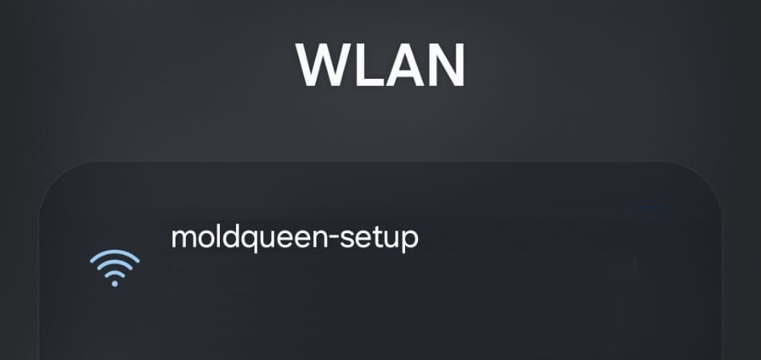
Join the open moldqueen-setup WiFi the board broadcasts on first boot. It needs no password.
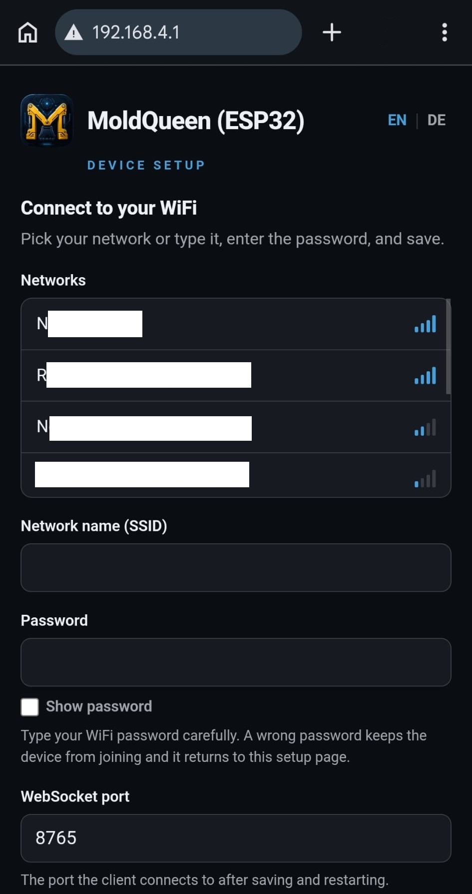
Open the setup page at http://192.168.4.1. It is branded and bilingual, and works fully offline.
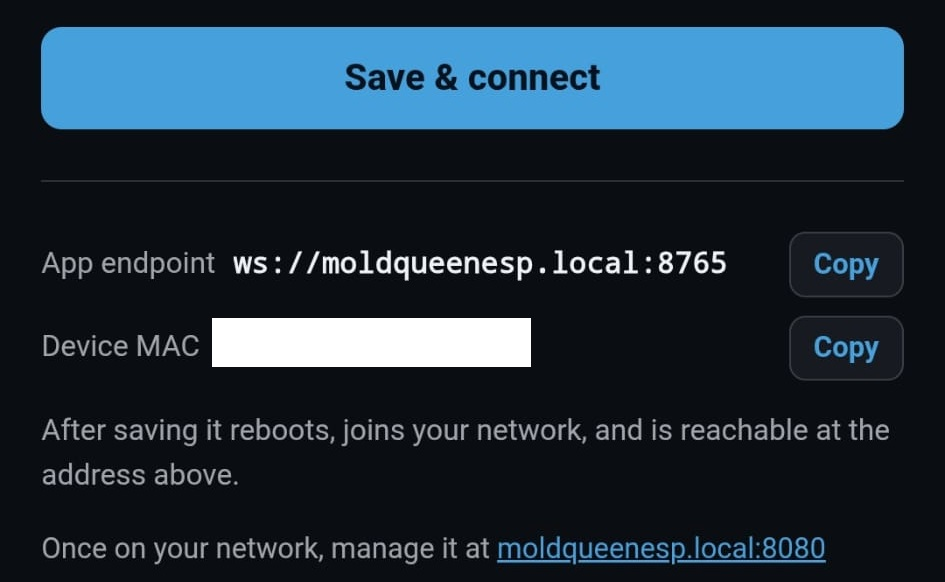
Pick your network from the scanned list, enter the password, set the WebSocket port if you like, and save. The board reboots and joins your WiFi.
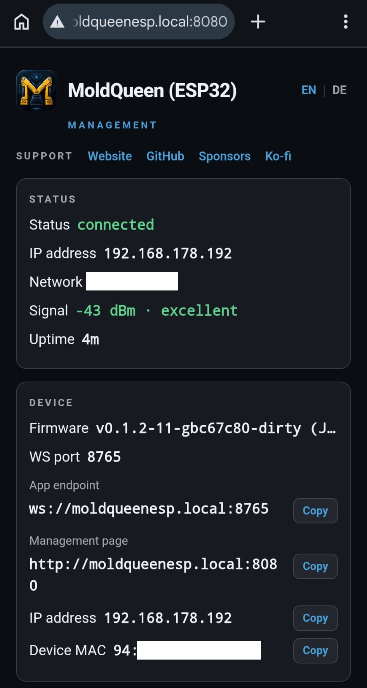
Back on your own network, open the status page at http://moldqueenesp.local:8080. Discovery is by name, so there is no IP to look up.
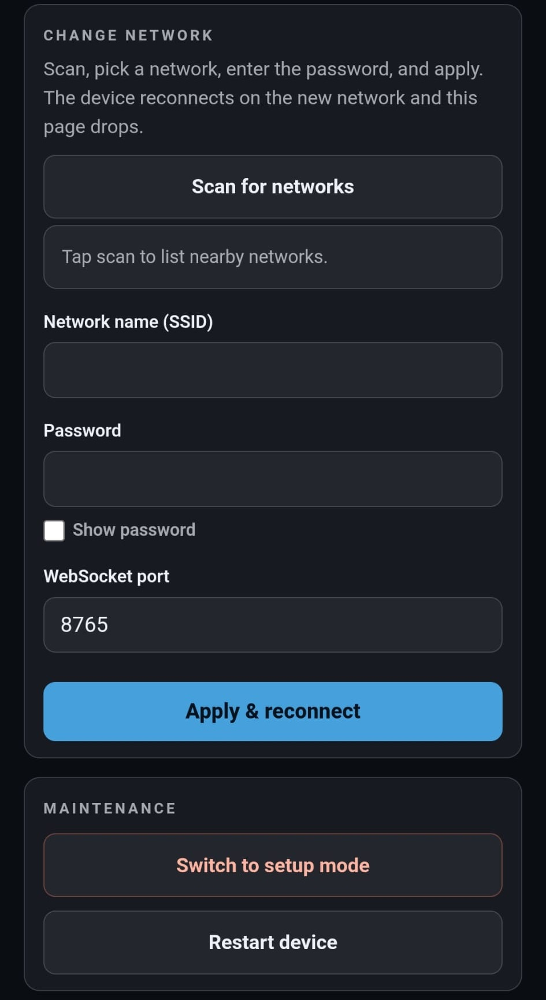
Manage the board from there: live status, restart, switch back to the setup WiFi, or change network. Point the client endpoint at ws://moldqueenesp.local:<port> and drive.
Download ESP32 firmware (.bin) →
Latest release: esp-v0.1.0. Grab moldqueen-esp32-<tag>.bin and flash the single image at offset 0x0: esptool.py --chip esp32s3 write_flash 0x0 moldqueen-esp32-<tag>.bin.
No credentials are stored in git or the binary. The full written walkthrough is in ESP32_SETUP.md; build and flash notes are in the esp32-core folder.
For developers
Built to come apart.
What matters is the contract. The radio core is a thin transport: it owns the radio and the safety lifecycle, nothing more. The smart client owns the channel map and turns every function into a low-level write. You can replace one side without touching the other.
Already have a radio core running? A published, public container serves just the web UI, with no Python and no build. It hosts the client over http://localhost, so it connects straight to a plain ws:// device on your network. It is a real local-hosting option for driving your own device, not a hosted demo.
docker run --rm -p 8080:8080 ghcr.io/jrichter24/moldqueen-client:latest
# then open http://localhost:8080/ and point the WS endpoint at your device
Use :latest for the newest build or pin :0.1.0 for the current version. The host port is the left number, so remap freely (-p 9090:8080). Point the endpoint at ws://moldqueenrasp.local:8765, ws://moldqueenesp.local:8765, or the IP form. Detail in REMOTE_CLIENT.md.
Want to add your own toy? A layout is just client files: a manifest entry, a thin page, and a channel map. The shared chrome (menu, settings, connect wizard, gamepad, STOP) comes for free. See Adding a layout and the rest of the developer docs. Issues and pull requests are welcome on GitHub.
Support
Support this project.
moldqueen is free and open source, a hobby project built in spare time. If it's useful to you, you can sponsor it on GitHub or buy me a coffee. No ads, no affiliate links, no strings.
Roadmap
Where it's going.
A direction, not a set of promises. The common thread is the API-first design: each item is either a new radio core behind the same contract, or a new client that speaks it.
- MK6 protocol. A second telegram codec for Mould King's per-byte MK6 hubs. It's what the greyed-out MK6 badges on the generic layouts are reserved for.
- ESP32 finishing. The ESP32 core is a usable standalone appliance: WiFi setup on the board, discovery as
moldqueenesp.local, a management page, Pi mDNS (moldqueenrasp.localfor the Raspberry Pi core), and a binary/release pipeline (a downloadable.bin) are all in. Serving the client from flash is next. - Camera (FPV). A first-person video feed from the machine, so you drive by what it sees. The same stream could feed an autonomous driver later.
- Time-of-flight sensor. Distance and obstacle awareness as telemetry, alongside the control API.
- AI brain. An agent that drives on its own by speaking the same WebSocket contract. Because of the thin-transport split, that's a new client rather than a rewrite.
Full detail in ROADMAP.md.
About
An independent hobby project.
moldqueen is a private, open-source hobby project for controlling Bluetooth-LE building-block RC toys. Mould King is the first brand it supports, and the design leaves room for more.
Disclaimer
A private, unofficial hobby project. It is not affiliated with, authorized by, endorsed by, or sponsored by Mould King / Shenzhen Yuxing. “Mould King” and related marks belong to their owners and are used here only descriptively, for interoperability. The protocol was reverse-engineered for interoperability with hardware the author owns, for educational and personal use.
Credits
The MouldKingCrypt cipher is ported byte-for-byte from J0EK3R/mkconnect-python (MIT, © 2024 J0EK3R), which also provided the groundwork for the MK4/MK6 protocol. BrickController2 was a further protocol reference. Full attribution in THIRD-PARTY-NOTICES.md.
How it was built
moldqueen was built with AI assistance: the early work used Claude (Fable), the later work Claude Opus 4.8. AI coding assistants helped with implementation. Architecture, product decisions, testing, and final code review remained under human control.
Author
Built by Dr. Jens Richter. Background in physics and electrical engineering; by day, tour optimization with genetic and AI algorithms at DNA Evolutions. Find me on LinkedIn. Built for my son Jonas, who loves excavators and helicopters.
Credit & attribution
Building on moldqueen, or forking it? A credit back is appreciated. It's MIT-licensed, so this is a request, not a requirement. A line like this in your README or about screen is plenty:
Built with moldqueen (https://github.com/jrichter24/moldqueen)
License
Released under the MIT License.
Like the project? You can buy me a coffee on Ko-fi ☕.